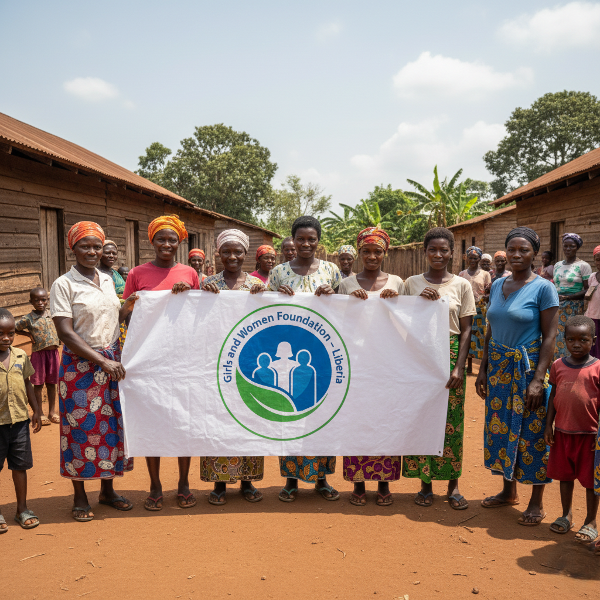

Comprehensive Healthcare Initiatives
We address the unique health challenges faced by women and girls in Liberia through preventive care, treatment, and health education.
Maternal Health
Reducing maternal mortality through prenatal care and skilled birth attendance
Reproductive Health
Access to family planning and reproductive health services
Preventive Care
Regular health screenings and preventive healthcare education
Health Education
Community-based awareness on health seeking and gender responsive skills
Our Health Programs
Health Awareness in Rural Communities
Our community outreach programs reach women and girls in rural areas with limited access to healthcare facilities, focusing on health education and awareness.
Services Provided:
- COVID-19 awareness and prevention
- Health seeking behavior education
- Gender responsive skills training
- Violence reporting mechanisms
- Community health education sessions

Training Local Health Champions
We recruit and mentor community-based volunteers on health seeking and gender responsive skills and reporting in Tchien & Cavalla districts of Grand Gedeh County.
Training Components:
- Health seeking behavior skills
- Gender responsive reporting
- COVID-19 prevention awareness
- Community mobilization techniques
- Data collection and reporting

Adolescent Girls Health Education
School and community awareness campaign on Sexual Reproductive Rights (Menstrual Cycle management & Control) for adolescent girls, encouraging their retention and completion of secondary education.
Program Components:
- Menstrual health management education
- Sexual reproductive rights awareness
- School retention encouragement
- Safe learning environment advocacy
- Violence prevention education

Community-Based Health Education
Collaborating with Grand Gedeh County SGBV Task Force and other partners to create awareness on health related issues including sexual gender-based violence, COVID-19 and other health concerns.
Education Topics:
- Sexual gender-based violence prevention
- COVID-19 awareness and prevention
- Health seeking behaviors
- Violence reporting procedures
- Community health protection

Our Health Impact
Collaboration with SGBV Task Force
Collaborated with Grand Gedeh County SGBV Task Force with support from UN-Women through DEN-L to create awareness on COVID-19 and other health related issues
Volunteer Training & Expansion
Recruited and mentored 20 community-based volunteers on health seeking and gender responsive skills and reporting in Tchien & Cavalla districts
School Outreach Program
Conducted two-month outreach program in seven communities and public schools in Zwedru on safe learning environment and violence prevention
Food Support Program
Collaborated with Caritas Cape Palmas and World Food Program-Liberia through grant provision for implementation of the Government of Liberia's Household Food Support Program
Sexual Reproductive Health Launch
Launched self-initiative school and community awareness campaign on Sexual Reproductive Rights focusing on menstrual cycle management and control for adolescent girls
Women's Health Rights Project
Completed two-month project on "Women Inclusion within County Development Agenda to Eliminate All Forms of Violence & Harmful Practices against Women and Girls & Increase Access to Sexual Reproductive Health Rights" with support from UNDP through Medica-Liberia
Health Resources
Access our health education materials and resources for women and girls.
Health Guides
Educational materials on sexual reproductive health rights and menstrual health management
Download GuidesReporting Hotline
Contact information for reporting violence and accessing health services in Grand Gedeh County
Call NowCommunity Sessions
Schedule of upcoming community health awareness sessions and training workshops
View ScheduleSupport Networks
Join our women's health support groups and community volunteer networks
Join Network